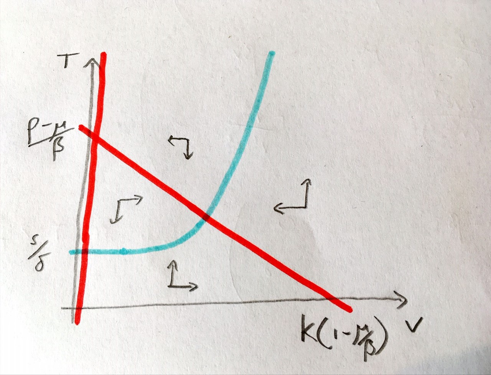

8 - A within-host Covid model ¶
Earlier, we were thinking about the dynamics of disease at the scale of human or ecological populations. Often, though, we will be more concerned with the health of individual patients, particularly from a medical perspective. In these cases, we want to know how a virus or bacteria grows and develops inside the body, and how our immune system interacts with it. To study these dynamics we therefore require a within-host model. While the biology here may seem less intuitive, it is important to remember that we are still dealing with populations. But whereas we previously thought of populations as groups of humans or animals, we are now looking at populations of cells or virus particles.
Case study: Covid-19¶
We will look at a relatively simple model of virus-cell dynamics that loosely describes the interaction between Covid-19 virus particules and a type of human immune cell callted the T-cell. The model is borrowed from works by Almocera et al. (2018) and Hernandez-Vargas & Velasco-Hernandez (2021). We assume that the virus grows in the body according to classic logistic growth, that it decays at some background rate but is also killed by T-cells. T-cells themselves are produced by the body at some constant, background rate, but also proliferate when they sense virus present. Finally the T-cells also decay. We can write down our model as follows,
As usual, all the parameters are positive and we will also assume that \(r>\delta\). There are a few things to notice about this model:
When a virus is killed by a T-cell, there is no corresponding killing of the cell itself.
T-cell production is constant, not a per-capita rate.
The proliferation function is sigmoidal - while virus density is small little proliferation occurs, but past a threshold value it rapidly increases. Quite a lot of the analysis is going to depend on knowledge of what this proliferation function looks like.
Have a go
Sketch the curve \(r\left(\frac{V^2}{V^2+c^2}\right)\) and discuss its key features with your neighbours.
Let us consider the equilibria of this system. If we factorise the first equation we find two possible ways to make it equal zero:
\(V=0\)
\(p(1-V/K)-\beta T - \mu =0 \implies T=(p(1-V/K)-\mu)/\beta\)
Substituting \(V=0\) into the second equation, we can find that this requires \(T=s/\delta\) for an equilibrium. This will be the virus-free equilibrium, with no virus and T-cells present at their background density.
For the second equilibrium we can see that the result is likely to be quite complicated. Indeed, there may even be more than one equilibrium produced. To save ourselves a lot of tedious algebra let us instead examine the phase portrait.
A graphical analysis¶
We have a two-dimensional system and both variables must be non-negative to make biological sense. We can use the workings we used when finding the equilibria to help us find the nullclines. The nullclines from the first equation give us:
\(V=0\) - a straight vertical line.
\(T=p(1-V/K)-\mu)/\beta\) - a decreasing line strating at \((p-\mu)/\beta\) and crossing 0 at \(V=K(1-\mu/\beta)\).
After a couple of lines of working we can find the nullcline from the second equation to be,
\(T=\frac{s}{\delta-r\left(\frac{V^2}{V^2+c^2}\right)}\).
What does this nullcline look like? It starts at \(T=s/\delta\) when \(V=0\) and as \(V\) gets very large we find \(T\to s/(\delta-r)\). In between these extremes we have this sigmoidal proliferation function to worry about. Note that \(V^2/(V^2+c^2)\) varies from 0 to 1 and is strictly increasing and that \(r>\delta\). This tells us two things:
The nullcline is strictly increasing.
At some point the denominator will pass through zero (some further work finds that techncially this happens twice, but one of the values occurs for \(V<0\)).
One additional thing to note is that the term, \(V^2/(V^2+c^2)\) remains small up to reasonably high values of \(V\). Therefore this term will initially not effect the nullcline much as \(V\) increases, meaning our nullcline is initially quite flat. We can put all of this together to form our phase portrait.
*Figure: Phase portraits of the within-host Covid-19 model.
What we see, then, is that there is only one equilibrium when the virus is present, and for the assumptions we have made about relative parameter values, it appears to be a stable spiral. We can additionally note that the initial dynamics are for a rapid rise in virus concentration but little change in T-cell density, before the virus becomes too prevalent and T-cell proliferation begins. We can also note that the virus density at the equilibrium is considerably lower thank it would be without T-cells. Examining the phase portrait, we might also conclude that the virus-free equilibrium will only become stable if we can move the \(T\) nullcline far enough upwards that the two non-zero nullclines no longer intersect. This would require \(s/\delta>(p-\mu)/\beta\). Let us see if we can confirm that with linear stability analysis.
Linear stability analysis¶
The general Jacobian for the system is given by,
Virus-free equilibrium - \(V=0,T=s/\delta\).
Since \(V^*=0\) both the top-right and bottom-left entries are zero, meaning we can read off the eigenvalues as the two terms on the main diagonal:
\(\lambda_1=p-\beta T^*-\mu\)
\(\lambda_2=-\delta\)
The second eigenvalue is negative, so everything depends on the first. Re-arranging we require \(T^*>(p-\mu)/\beta\). Recall that for the virus free equilibrium we have \(T^*=s/\delta\). Therefore this equilibrium is only stable when \(s/\delta>(p-\mu)/\beta\), exactly as we surmised was the case from our phase porttrait.
Virus-present equilibrium
You will recall that we never wrote down an expression for this equilibrium. You might remember from previous lectures, however, that this does not necessarily stop us making conclusions about its stability. We know from the phase portrait that there is only one equilibrium to worry about. We also know from the equilibrium conditions that:
\(p(1-V^*/K)-\beta T-\mu=0\)
\(rV^{*2}/(V^{*2}+c^2)-\delta = -s/T^*\).
Substituting these values in to the Jacobian we now find,
Now we must assess stability based on the trade and determinant conditions. These are:
\(tr(J)=-\frac{pV^*}{K}-\frac{s}{T^*} <0\)
\(det(J) = \frac{psV^*}{kT^*}+r\beta V^*T^*\left(\frac{2V^*c^2}{V^{*2}+c^2)}\right)>0\)
This means that whenever the equilibrium at \(V^*,T^*>0\) exists, it must be stable. And we know from the phase portrait that the condition for it to exist is the exact opposite of the condition for stability of the virus-free equilibrium.
Treatment¶
There are many ways we might think about a treatment working in this model. It might be something that reduces the growth rate of the virus, or that encourages T-cell proliferation.
Have a go
Taking the model above as your base, write out a model that includes some form of treatment. Explain to your neighbour what effect you would predict to have.
3 key points¶
We can build models of cell-virus interactions in much the same way as we did for interactions between whole organisms.
The virus will reach a non-zero equilibrium provided it grows quickly and there is limited killing by T cells.
The sigmoidal proliferation rate makes T cells initially slow to respond to an infection.